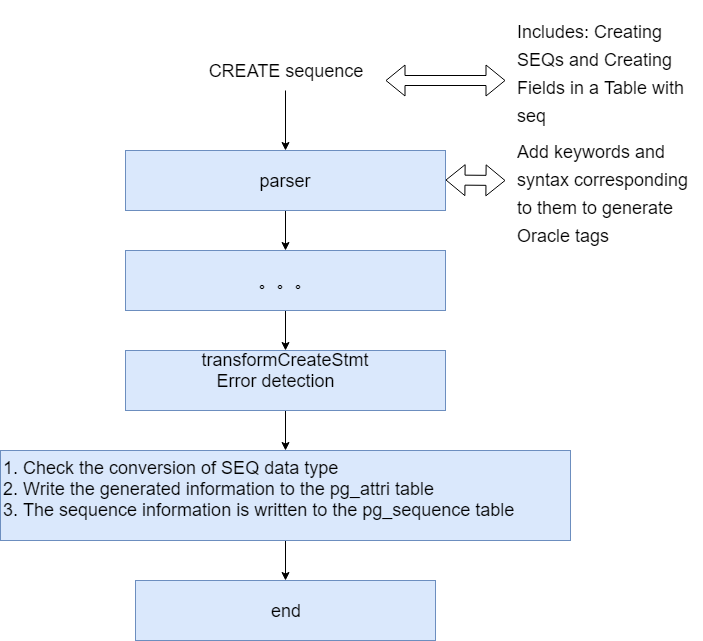

Compatible oracle-sequence
1. Objective
-
In order to be compatible with Oracle-Sequence, it is necessary to improve the functionality of Postgres on the basis of the original SEQ to achieve the goal.
2. Feature implementation
2.1. Create sequence
-
Including direct create sequence and create table fields with sequence attributes, the flowchart is as follows:

-
Due to the differences between Oracle and PG SEQ, 3 features of the ORA SEQ have been added to the AttIdentity field in the pg_attri table:
i: Represents the generated always option compatible with Oracle
o: Represents the generated by default option compatible with Oracle
n: Represents Oracle-compatible default on null option2.2. Alter sequence
-
Includes direct alter sequence and alter table with sequence attribute fields. The process is similar to the Create Sequence.